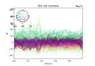

Real-time M/EEG Acquisition#
Receive data from an MNE Real-time server (mne_rt_server, part of MNE-CPP), compute real-time moving averages, etc.

Compute real-time evoked responses using moving averages
Compute real-time evoked responses using moving averages


Compute real-time evoked responses with FieldTrip client
Compute real-time evoked responses with FieldTrip client

Compute real-time power spectrum density with FieldTrip client
Compute real-time power spectrum density with FieldTrip client

Plot real-time epoch data with LSL client
Plot real-time epoch data with LSL client
Real-time feedback for decoding :: Server Side
Real-time feedback for decoding :: Server Side